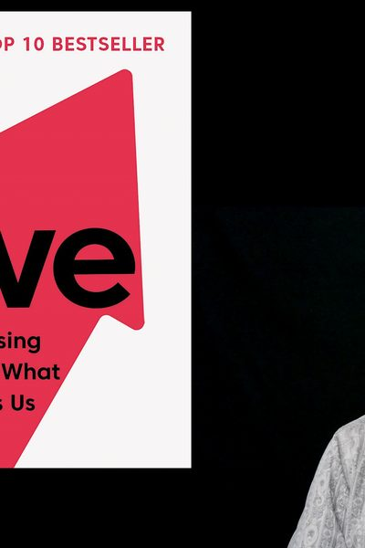

Library › Psychology & People
Drive — Summary & Key Lessons

The surprising truth about what motivates us — and why carrots and sticks backfire on everything that matters.
📖 OPEN THE FULL INTERACTIVE BREAKDOWN →🌐 Read it in Hindi, Hinglish, Gujarati, Tamil & 22 more languages — free, with audio.
💡 The Big Idea
Business runs on an outdated operating system: Motivation 2.0 — carrots and sticks. Forty years of science says it's wrong for modern work: contingent rewards ('if-then') NARROW focus, which helps mechanical tasks but demonstrably worsens creative and conceptual performance (the candle problem: rewards made solvers SLOWER), crush intrinsic interest (kids paid to draw stopped drawing for fun — the Sawyer Effect: rewards turn play into work), encourage cheating and short-termism, and become addictive baselines. The upgrade — Motivation 3.0 — runs on three nutrients: AUTONOMY (self-direction over task, time, technique, team: ROWE workplaces and 20%-time innovations), MASTERY (the desire to get better at something that matters — needs Goldilocks tasks at the edge of ability, flow states, and acceptance that mastery is an asymptote you never fully reach), and PURPOSE (profit as fuel, contribution as direction — purpose-driven goals outperform profit-driven ones even on profit). Pay people enough to take money off the table — then feed the three drives.
🧠 The 6 Key Lessons
Lesson 1: The Candle Problem: When Rewards Make You Worse
Part 1: Motivation 2.0's Bugs
Glucksberg's classic: solve a lateral-thinking puzzle (attach a candle to a wall using tacks and a matchbox). Groups offered cash incentives took LONGER — the reward narrowed attention exactly when the task needed breadth. This replicates across decades (the LSE reviewed 51 corporate pay-for-performance studies: financial incentives can reduce overall performance): if-then rewards suit algorithmic tasks (clear steps, single answer) and damage heuristic ones (creativity, judgment, strategy) — which is nearly everything valuable left after automation. Bugs continue: rewards extinguish intrinsic interest, foster cheating (hit the number by any means), and escalate (this year's bonus is next year's entitlement).
📖 Example: The blood-donation study Pink loves: Swedish women offered payment to donate blood donated LESS than the unpaid group — the fee crowded out the meaning, converting a civic act into a bad-wage transaction (adding an option to donate the fee to charity… Read the full example →
⚡ Do this: Audit your incentives (team or personal): for every if-then reward attached to creative work, replace it with 'now-that' recognition (unexpected, after the fact) and redirect the money to base pay — take compensation off the psychological table.
Lesson 2: Autonomy: The Four T's
Part 2: Autonomy
Self-direction is the default human setting (watch any toddler); management was invented to override it for factory work, and the override now costs more than it produces. Autonomy has four dimensions: TASK (what you work on — Google's 20% time yielded Gmail and AdSense; Atlassian's 'FedEx Days' shipped overnight breakthroughs), TIME (judge output, not hours — ROWE workplaces: results-only, meetings optional, productivity up, turnover down), TECHNIQUE (how the work gets done — Zappos untethered call reps from scripts and timers; service soared), TEAM (whom you work with). You don't need all four at once: pick the dimension your people crave most and expand it deliberately — engagement follows control.
📖 Example: Atlassian's FedEx Days ('deliver something overnight'): engineers get 24 autonomous hours quarterly — task, technique and team fully theirs — and repeatedly produce fixes and features that formal roadmaps missed for years. The economics stunned skeptics: one… Read the full example →
⚡ Do this: Run one autonomy experiment this month: a 24-hour FedEx Day (any project, demo tomorrow), one results-only week (no fixed hours, output agreed upfront), or handing one process's 'how' fully to its operators. Measure output and mood; scale what works.
Lesson 3: Mastery and Purpose: The Asymptote and the Why
Part 2: Mastery, Purpose
MASTERY begins in flow — Csikszentmihalyi's state where challenge meets skill — so engineer Goldilocks tasks: not boring, not overwhelming, recalibrated as people grow (stagnant role = disengagement disguised as laziness). Its three laws: mastery is a MINDSET (believing ability is improvable — Dweck), mastery is PAIN (deliberate practice, plateaus, grit), mastery is an ASYMPTOTE (you approach, never arrive — the pursuit is the reward, which is why masters stay hungry). PURPOSE is the third leg: humans over-perform for causes larger than themselves; purpose-mute organizations get compliance, purpose-rich ones get devotion. Practical signals: use pronouns (do people say 'we' or 'they' about the company?), spend words on WHY before WHAT, and test policies against purpose, not just profit.
📖 Example: The University of Rochester graduates study: those with profit goals ('get rich') who ACHIEVED them reported no rise in satisfaction — and more anxiety; purpose-goal graduates who progressed reported deep well-being. Pink's corporate exhibit: TOMS (buy one,… Read the full example →
⚡ Do this: For yourself: define your current Goldilocks zone — if your main work is <4 or >8 on a 10-point challenge scale, renegotiate scope this month. For your team: replace one metric-only goal with a purpose-framed version ('ship X' → 'ship X so that [who] can [what]') and watch which version people mention unprompted.
Lesson 4: The Type I Toolkit: Daily Practices for Intrinsic Motivation
Part 3: The Type I Toolkit
Pink closes with the operating manual for individuals. THE FLOW TEST: set random alarms for a week; at each, note what you're doing and whether you're in flow — the audit reveals which work deserves more of your life and which is quiet erosion. THE ONE SENTENCE: distill your purpose to a single line ('He raised readers.' 'She made small businesses solvent.') — clarity at that compression exposes every activity that doesn't serve it. WAS I BETTER TODAY THAN YESTERDAY: the mastery question, asked nightly — small-step progress tracking that research ties directly to motivation (progress is the single biggest daily motivator, per Amabile's studies). GIVE YOURSELF A PERFORMANCE REVIEW monthly: set your own learning goals, audit honestly — waiting for the annual corporate version outsources your growth to a form. And the 20% WEEKEND: if your employer won't fund exploration time, self-fund it — one Saturday morning monthly on the project that might become the next chapter. Type I behavior, Pink insists, is renewable: it strengthens with use, unlike carrot-chasing, which corrodes.
📖 Example: Pink's exhibit for the one-sentence practice comes from Clare Boothe Luce confronting JFK in 1962: 'a great man is one sentence' — Lincoln's and FDR's were obvious; Kennedy's, she warned, was blurring into a paragraph of competing priorities. Pink scales it… Read the full example →
⚡ Do this: Run all three this month: (1) flow-test yourself with 5 random daily alarms for one week and list your top-3 flow triggers; (2) write your one sentence and tape it where you plan your week — cut one recurring activity that serves someone else's sentence; (3) start the nightly two-second review: 'better than yesterday at what matters? yes/no' — streaks of yes are the only KPI.
Lesson 5: Purpose: The Motivation to Do Something Bigger Than You
Part 3: The Third Drive
Pink's third element of intrinsic motivation: purpose — the sense that your work contributes to something larger than yourself. The research shows purpose is not a luxury for non-profits; it is a core driver for everyone, and businesses that articulate a purpose beyond profit outperform those that don't (in profits too). The catch: purpose can't be pasted on — it must be genuine and specific ('we make clean water' beats 'we make shareholders happy'). For individuals, the question is not 'what do I get?' but 'what do I give?' — and for leaders, the job is connecting daily work to the larger why, repeatedly. Money is the tide; purpose is the sail.
📖 Example: Pink cites how companies with explicit purposes — from Patagonia's environmental mission to TOMS' giving model — attract talent, loyalty and customers that profit-only competitors can't match, because people work and buy for meaning as much as for money. Read the full example →
⚡ Do this: Write your personal or team's one-sentence purpose: 'We exist so that ___'. Post it somewhere visible and test your next three decisions against it.
Lesson 6: The Motivation 2.0 Mismatch: Why Carrots and Sticks Fail at Creative Work
Part 1: The Problem
Pink's opening diagnosis: the old operating system (Motivation 2.0 — reward good, punish bad) works for routine mechanical work but breaks on creative, cognitive work. The candle problem (a classic creativity experiment) shows it: rewards for faster completion make people SLOWER on creative tasks, because the promise of a reward narrows focus exactly when broad thinking is needed. The lesson for work and parenting: carrots and sticks are fine for compliance, toxic for creativity. The shift: stop asking 'how do I motivate people?' and start asking 'how do I remove the demotivators and let their intrinsic drive out?' The first drive (survival) and second (rewards) get the basics done; the third drive (autonomy, mastery, purpose) gets the breakthroughs.
📖 Example: Pink walks through the classic candle experiment — subjects offered money to solve the puzzle took longer than those offered nothing — and connects it to real workplaces where bonuses for 'innovation' consistently produce incremental thinking instead. The… Read the full example →
⚡ Do this: Identify one place where you manage (or self-manage) with carrots and sticks. Replace one reward/punishment with autonomy, mastery or purpose this week — and watch what changes.
✅ 5-Step Action Plan
- Strip if-then rewards from creative work; pay fairly, then take money off the table.
- Expand one of the four T's (task, time, technique, team) each quarter.
- Run FedEx Days: 24 autonomous hours, demo the next day.
- Keep everyone in the Goldilocks zone — recalibrate challenge as skills grow.
- Frame every goal with its why; listen for 'we' vs 'they' as your culture meter.
⚠️ When This Doesn't Work
Pink's 'intrinsic motivation beats extrinsic rewards' assumes the people are the problem — GoMechanic shows the other side: when growth targets become the scoreboard, even intrinsically motivated people learn to game the score. The company's team faked ₹300 crore of revenue not because they lacked purpose but because the metric culture made the fake number the only way to survive the quarter. Purpose survives only when the incentive system doesn't contradict it every Friday. Pink underweights how fast culture is decided by what gets paid.
💀 The Graveyard Proves It
🔧 GoMechanic — The $300M 'Unicorn' That Was a Fabricated Dream. Burn: Planned $300M funding collapsed; founders admitted revenue fabrication. Read the full case study →
💬 Best Quotes from Drive
- “Control leads to compliance; autonomy leads to engagement.”
- “The secret to high performance isn't rewards and punishments, but that unseen intrinsic drive.”
- “Greatness and nearsightedness are incompatible.”
Interactive version: mark lessons as read, listen in your language, share quote cards.